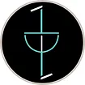

Hey there! I am a PhD student at the University of Glasgow, working in the Extreme Light group under the
supervision of Daniele Faccio and
Ashley
Lyons. I am someone who is passionate about addressing challenges in emerging
computing technologies, with a specific focus on hardware-software collaboration and optimization, and
this is my short wiki.
I've had the privilege of collaborating with some incredible researchers along my journey. Before this, I was part of BosonQ Psi as a quantum optimization researcher focusing on quantum evolutinary algorithms.
My journey also includes a stint as a pre-doctoral fellow at IISC, India, collaborating with K.J. Vinoy along with a bachelor's thesis at TCS Innovation Labs, with the mentorship of Manoj Nambiar.
I completed my undergrad from Indian Institute of Information Technology, Guwahati, India where I worked as an undergraduate researcher under Babita Jajodia where I developed a framework to automate optimized transistor sizing. I also interned at Defence Research and Development Organisation, India under the supervision of Teza Bhaimidi and at International Institute of Information Technology Hyderabad, India under the supervision of Siddhartha Das in the fields of radar detection and quantum communication, respectively as well as attended the Machine Learning Summer School organized by Amazon India.
Research aside, I have worked as an editor for Entrepreneurship Cell, IIITG, a social media and marketing lead for the Google Developer Students Club, IIITG and as an editorial board member for TEDxIIITG.
For more details, hit me up on my email or hop to my blog where I curate my thoughts from time to time.


I've had the privilege of collaborating with some incredible researchers along my journey. Before this, I was part of BosonQ Psi as a quantum optimization researcher focusing on quantum evolutinary algorithms.
My journey also includes a stint as a pre-doctoral fellow at IISC, India, collaborating with K.J. Vinoy along with a bachelor's thesis at TCS Innovation Labs, with the mentorship of Manoj Nambiar.
I completed my undergrad from Indian Institute of Information Technology, Guwahati, India where I worked as an undergraduate researcher under Babita Jajodia where I developed a framework to automate optimized transistor sizing. I also interned at Defence Research and Development Organisation, India under the supervision of Teza Bhaimidi and at International Institute of Information Technology Hyderabad, India under the supervision of Siddhartha Das in the fields of radar detection and quantum communication, respectively as well as attended the Machine Learning Summer School organized by Amazon India.
Research aside, I have worked as an editor for Entrepreneurship Cell, IIITG, a social media and marketing lead for the Google Developer Students Club, IIITG and as an editorial board member for TEDxIIITG.
For more details, hit me up on my email or hop to my blog where I curate my thoughts from time to time.
Publications
Design Automation of Two-Stage Operational Amplifier Using
Multi-Objective Genetic Algorithm and SPICE Framework
Purvi Das,
ICICT'22
| International Conference on Inventive Computation Technologies
paper
abstract
cite
Updates
| Oct 2024: | Starting my PhD at University of Glasgow! |
| Nov 2023: | Joining BosonQ Psi as a quantum optimization researcher! |
| Jul 2023: | Starting a pre-doctoral fellowship at IISC. |
| Dec 2022: | Embarking on a research role for the bachelor's thesis at TCS Research. |
| July 2022: | Joining Machine Learning Summer School as a fellow organized by Amazon India. |
| July 2022: | Presenting paper entitled "Design Automation of Two-Stage Operational Amplifier Using Multi-Objective Genetic Algorithm and SPICE Framework" at ICICT'22. |
| May 2022: | Summer internship at the CSTAR Lab, IIIT Hyderabad where I will be working with Siddhartha Das. |
| May 2022: | Presenting technical presentation on extended abstract in North-East Research Conclave, Indian Institute of Technology Guwahati. |
| Dec 2021: | Working as an undergraduate researcher under Babita Jajodia. |
| Dec 2021: | Winter internship at the IOCL. |
| Apr 2021: | Summer internship at the Advanced Systems Labotary, DRDO, Hyderabad where I will be working with Teza Bhaimidi. |
| Aug 2019: | I started my B.Tech at IIIT Guwahati! |
University of Glasgow
Present

BosonQ Psi
2023-24
IISC
2023
TCS Research
D2022
IIIT Guwahati
2019-23
IIIT Hyderabad
S2022
Amazon
S2022
IOCL
D2021
DRDO
S2021